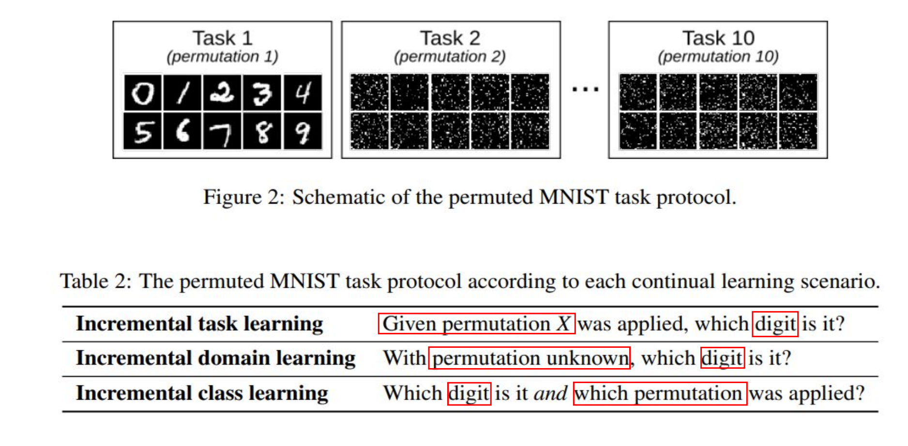

A brief Introduction to Continue Learning / Life long Learning
What is Continual Learning?
A high level definition.
“Continual Learning is the constant development of increasingly complex behaviors; the process of building more complicated skills on top of those already developed.” --- Ring(1997).CHILD: A First Step Towards Continual Learning
Continual Learning is also referred to as lifelong Learning, sequential learing or incremental Learning. They have the same define.
“Studies the problem of Learning froman infinite stream of data, with the goal of gradually extending acquired knowledge and using it for future Learning.” --- Z.Chen. Lifelong machine Learning
In others words, Continual Learning tries to make machine like human to adaptive continuou Learning in a dynamic environment to learn tasks sequentially (from birth to death).
A low level definition.
Continual Learning(CL) is an algorithm whose goal is to make machine Learning models train on non-stationary data (different from I.I.D. data.) from sequential tasks.
Take an example1, we define a sequence of tasks \(D = \{D_1, \ldots, D_T\}\), where the t-th task \(D_t= \{(\mathbf{x}_i^t,y_i^t)\}_{i=1}^{n_t}\) contains tuples of the input sample \(\mathbf{x}_i^t \in \mathcal{X}\) , and it's label \(y_i^t \in \mathcal{Y}\). The goal of the CL model is to train a single model \(f_\theta : \mathcal{X} \rightarrow \mathcal{Y}\) parameterized by \(\theta\), and it can predicts the label \(y = f_\theta (\mathbf{x}) \in \mathcal{Y}\), where \(\mathbf{x}\) is an unseen test sample from arbitrary tsaks. And data from the previous tasks may not be seen anymore when training future tasks.
Motivation & Application scenarios
As we all know, Alpha-Go kills everyone in the Go world, however when it face to Chess, it is powerless. Similarly, YOLO(A model you only look once) can detect the dog easily, but it can only detect the specific object. Therefore, people look forward to a model that can resolve the aforementioned problems. This calls for systems that adapt Continually and keep on Learning over time.
And talk about the application scenarious, Continual Learning can be used in many areas. Take some simple examples, a robot need to acquire new skills in different environment to complish new tasks, a self-driving car need to adapt to different environments (from a country road to a highway to a city), and the conversational agents should adapt to different users, situations, tasks.

The Challenge of Continual Learing
Nowadays, methods of realizing Continual Learning almost use Neural Networks(CNN, TransFormer and so on). And due to the limitations of the Neural Networks, the Continual Learning faces two major challenges, Catastrophic Forgetting and Balance between Learning and Forgeting(Stability vs Plasticity).
Catastrophic Forgetting. When the data is updated incrementally, the model will face catastrophic interference or forgetting, which leads to the model forgetting how to solve the old task after Learning the new task.
For example: A vision model, which can classify images into two categories. First, we train the vision model by
Cat vs Dog Datasets, and then we get a perfect Acc(maybe 99.98%?) on current datasets. Second, we put the pre-trained model to another datset(e.g.Car vs Ship Datasets) to train, and can get a nice performance at the current datsets too. However, when we go back to theCat vs Dog Datasets, we will find that the model forgets the previous data and can not divide them accurately.
Stability vs Plasticity. For people, the faster you learn, the faster you forget. The same is true for machines. How to balance the relationship between them is also a challenge.
- Stability <=> ability to retain the learned skills on the old tasks
- Plasticity <=> ability to adapt to a new task

Albeit a challenging problem, progress in Continual Learning has led to real-world applications starting to emerge.
Four Assumptions of Continual Learning
Due to the general difficulty and variety of challenges in Continual Learning, many methods relax the general setting to an easier task incremental one.
Before understand the assumptions of the Continual Learing, we should know some pre-settings. The same to A low level definition
X - input vector
Y - class label
T - task.
The concept 'task' refers to an isolated training phase with a new batch of data, belonging to a new group of classes, a new domain, or a different output space.
\((\mathcal{X}^t,\mathcal{Y}^t)\) - Dataset for task t.
\(\{\mathcal{Y}^t\}\) - Class labels. e.g.:Dog Cat Bird ...
\(P(\mathcal{X}^t)\) - input distributions. For different task, \(P(\mathcal{X}^t) \neq P(\mathcal{X}^{t+1})\)
\(f_t(\mathcal{X^t};\theta)\) -The predicted label of \(\mathcal{Y^t}\),model is parameterized by \(\theta\)
The four assumptions of Continual Learning : 1. Task incremental Learning. 2. Class incremental Learning. 3. Domain incremental Learning. 4. Data incremental Learning / Task-Agnostic Learning.
Task ID observed at training:
- Task observed at test: Task incremental Learning
- Task not observed at test : Class incremental Learning and Domain incremental Learning
Task ID not observed at training:
- Data incremental Learning / Task-Agnostic Learning
Detail description of four setting:
Task incremental Learning(the easiest scenario)
Task incremental learning considers a sequence of tasks, receiving trainig data of just one task at a time to perform traing until convergence. During this setting, models are always informed about which task needs to be performed (both at train and test time). However, data is no longer available for old tasks, impeding evaluation of statistical risk for the new parameter values.
Express it with formulas:
Data \((\mathcal{X}^t,\mathcal{Y}^t)\) is a training-data of task t, the current task is \(\mathcal{T}\).
The goal is to control the statistical risk of all seen tasks given limited or no access to data from previous tasks \(t < \mathcal{T}\). In others words, the research focals on optimizing the below formula parameterized by \(\theta\): \[\sum\limits_{t=1}^{\mathcal{T}}\mathbb{E}_{(\mathcal{X}^t,\mathcal{Y}^t)}[\mathscr{L}(f_t(\mathcal{X^t};\theta),\mathcal{Y^t})],\] For the current task \(\mathcal{T}\), the statistical risk can be approximated by the empirical risk: \[\frac{1}{N_\mathcal{T}}\sum\limits_{t=1}^{N_\mathcal{T}}\mathscr{L}(f_t(x_i^{\mathcal{T}};\theta),y_i^{\mathcal{T}})], \] where \(N_{\mathcal{T}}\) is the number data of task \(\mathcal{T}\).

All in all, this setting assumptions are: \(P(\mathcal{X}^t) \neq
P(\mathcal{X}^{t+1})\) and \({\{\mathcal{Y}\}^t\neq
\{\mathcal{Y}^{t+1}\}}\)(different labels when in different
task), \(P(\mathcal{Y}^t) \neq
P(\mathcal{Y}^{t+1})\), but you know which task it is when in
test.(each task has it's specific task-label t).
Class incremental Learning
'An algorithm learns continuously from a sequential data stream in which new classes occur. At any time, the learner is able to perform multi-class classification for all classes observed so far.2'
Models must be able not only to solve each task seen so far, but also to infer which task they are presented with.(You don't know which task you are facing) The new class labels may be added into the model in new task.

The setting assumptions are: \(P(\mathcal{X}^t) \neq P(\mathcal{X}^{t+1})\) and \({\{\mathcal{Y}\}^t\subset \{\mathcal{Y}^{t+1}\}}\)(Class incremental), \(P(\mathcal{Y}^t) \neq P(\mathcal{Y}^{t+1})\), and you don't know which task it is when in test.
Domain incremental Learning
It defines a more general continual learning setting for any data stream without notion of task, class or domain.
Models only need to solve the task at hand; they are not required to infer which task it is. In other words, task concept is not specific now, but it also have the task.
The setting assumptions are: \({\{\mathcal{Y}\}^t= \{\mathcal{Y}^{t+1}\}}\), \(P(\mathcal{Y}^t) = P(\mathcal{Y}^{t+1})\).
Data incremental Learning / Task-Agnostic Learning (the hardest scenario)
Task identity is not available even at training time! Task-Agnostic Learning has no task concept at all, and it is the ideal condition of Continual Learning.
For a clearer understanding Task incremental Learning,Class incremental Learning and Domain incremental Learning, you can see the following images3:
Split Mnist Task: Split the number into different task.

Permuted Mnist Task: Permute each image in MNIST after vectorization. Actually use a group of random indexes to disrupt the position of each element in the vector(image). Different random indexes will generate different tasks after being disrupted. 
The difference between Continuous Learning and Multi-Task
Multi-Task Gradient Dynamics: Tug-of-War(拔河拉锯)
However, the tasks are not available simultaneously in CL! Need to use some form of memory, or to modify the gradients, to still take into account what solutions are good for previous tasks
Some key definitions！
Transfer and Interference
Note: We need to maximize Transfer and minimize Interference.
Possible Scenarios in CL

The method of Continual Learning
Refer to Lange, M. D., et al.4, I try to draw a mind mapping for better understand the current mainstream methods of Continual Learning.
The define of each method5: ### Replay Methods As you see, replay is the key. To realize replay, this line of work should store samples in raw format or generate pseudo-samples with a generative model (e.g. GAN/diffusion model) because of privacy policy. Then, these previous task samples are replayed while learning a new task to alleviate forgetting. According to different ways of use, replay methods can be divided into the following three categories:
Rehearsal (Easy to implement, but poor performence )
It is the esaiest way to understand. Just combine a limited subset of stored samples(old tasks) into new task, and retrain the model.
- Advantage:
- Easy to implement
- Disadvantage:
- Be prone to overfitting the subset of stored samples.
- Be bounded by joint training.
Pseudo Rehearsal
Feed random input to previous models, use the output as a pseudo-sample. (Generative models are also used nowadays but add training complexity.)6

Novel GR method7: internal or hidden representations are replayed that are generated by the network's own, context-modulated feedback connections.
Constrained Optimization
Minimize interference with old tasks by constraining updates on the new task. The goal is to optimize the loss on the current examples(s) without increasing the losses on the previously learned examples.
Assume the examples are observed one at a time. Formulate the goal as the following constrained optimization problem. \[\theta^{t}=\argmin_\theta \ell\left(f\left(x_{t} ; \theta\right), y_{t}\right) \] \[s.t. \ell\left(f\left(x_{i} ; \theta\right), y_{i}\right) \leq \ell\left(f\left(x_{i} ; \theta^{t-1}\right), y_{i}\right) ; \forall i \in[0 \ldots t-1]\]
\(f(. ; \theta)\) is a model parameterized by \(\theta\), \(\ell\) is the loss function. \(t\) is the index of the current example and \(i\) indexes the previous examples.
The original constraints can be rephrased to the constraints in the gradient space:
\[ \left\langle g, g_{i}\right\rangle=\left\langle\frac{\partial \ell\left(f\left(x_{t} ; \theta\right), y_{t}\right)}{\partial \theta}, \frac{\partial \ell\left(f\left(x_{i} ; \theta\right), y_{i}\right)}{\partial \theta}\right\rangle \geq 0 \]
Regularization-Based Methods
These method avoids storing raw inputs, prioritizing privacy, and alleviating memory requirements. In these methods, an extra regularization term is introduced in the loss function, to consolidate previous knowledge when learning on new data. We can further divide these methods into datafocused and prior-focused methods.8
Data-Focused Methods
The basic building block in data-focused methods is knowledge distillation from a previous model (trained on a previous task) to the model being trained on the new data.
Prior-Focused Methods
To mitigate forgetting, prior-focused methods estimate a distribution over the model parameters, used as prior when learning from new data. Typically, importance of all neural network parameters is estimated, with parameters assumed independent to ensure feasibility. During training of later tasks, changes to important parameters are penalized.
Parameter Isolation Methods
This family dedicates different model parameters to each task, to prevent any possible forgetting. These mehods avoid forgetting by using different parameters for each task.
Best-suited for: task-incremental setting, unconstrained model capacity, performance is the priority.
Fixed Network Methods Network parts used for previous tasks are masked out when learning new tasks (e.g., at neuronal level (HAT) or at parameter level (PackNet, PathNet)
Dynamic Architecture Methods
When model size is not constrained: grow new branches for new tasks, while freezing previous task parameters (RCL), or dedicate a model copy to each task (Expert Gate), etc.
Conlusion
TODO! Summaries will be added when i am familiar enough with this field.
Appendix:
Mind Map

Some representative Replay Methods(Keep updating):
Only brief introduction, read the origional paper for more information. #### iCaRL (incremental classifier and representation learning)
iCaRL belongs to Rehearsal and Class incremental Learning.
iCaRL, that allows learning in such a classincremental way: only the training data for a small number of classes(NOT ALL DATA! new data + some old data) has to be present at the same time and new classes can be added progressively.
The author introduces three main components that in combination allow iCaRL to fulfill all criteria put forth above.
classification by a nearest-mean-of-exemplars rule
prioritized exemplar selection based on herding
representation learning using knowledge distillation and prototype rehearsal.
Classification (nearest-mean-of-exemplars)
Algorithm 1 describes the mean-of-exemplars classifier that is used to classify images into the set of classes observed so far.
where \(\mathcal{P} = (P_1,\ldots,P_t)\) is exemplar images that it selects dynamically out of the data stream.
And \(t\) denotes the number of classes that have been observed so far(\(t\) increases with time).
\(\varphi:\mathcal{X}\rightarrow \mathbb{R}^d\), a trainable feature extractor, followed by a single classification layer with as many sigmoid output nodes as classes observed so far.
Class label \(y\in \{1,\ldots,t\}\).
Training
For training, iCaRL processes batches of classes at a time using an incremental learning strategy. Every time data for new classes is available iCaRL calls an update routine (Algorithm 2)
Other algorithm (For more detail, you can visit 10.1109/CVPR.2017.587)

GEM: Gradient Episodic Memory for Continual Learning9
Some important definition:
Note: Analogous to Transfer and Interference. 1. Backward transfer(BWT), which is the influence that learning a current task \(t\) has on the performance on a previous task \(k\) (\(k<t\)). - Positive Backward transfer: There exists positive backward transfer when learning about some task t increases the performance on some preceding task k. - Negative Backward transfer: There also exists negative backward transfer when learning about some task t decreases the performance on some preceding task k. Large negative backward transfer is also known as catastrophic forgetting. 2. Forward transfer(FWT), which is the influence that learning a current task t has on the performance on a future task k (\(k>t\)). (Rarely discussed because it is unpredictable) - Positive Forward transfer: In particular, positive forward transfer is possible when the model is able to perform “zero-shot” learning, perhaps by exploiting the structure available in the task descriptors.
Evaluation:
GEM:
Experiments: 
For More Blogs
TODO : The future of Continue Learning.
TODO : Details of some papers。
Reference & Acknowledgements
Wang, Z., et al. (2022). Learning To Prompt for Continual Learning. Proceedings of the IEEE/CVF Conference on Computer Vision and Pattern Recognition (CVPR).↩︎
Rebuffi, S., et al. (2017). iCaRL: Incremental Classifier and Representation Learning. 2017 IEEE Conference on Computer Vision and Pattern Recognition (CVPR).↩︎
Gido van de Ven and Andreas S. Tolias.(2019) Three scenarios for continual learning. arXiv:1904.07734↩︎
Lange, M. D., et al. (2022). "A Continual Learning Survey: Defying Forgetting in Classification Tasks." Ieee Transactions on Pattern Analysis and Machine Intelligence 44(7): 3366-3385.↩︎
Lange, M. D., et al. (2022). "A Continual Learning Survey: Defying Forgetting in Classification Tasks." Ieee Transactions on Pattern Analysis and Machine Intelligence 44(7): 3366-3385.↩︎
https://icml.cc/virtual/2021/tutorial/10833 Part of blog's pictures come from this link. Thanks :)↩︎
van de Ven, G. M., et al. (2020). "Brain-inspired replay for continual learning with artificial neural networks." Nature Communications 11(1): 4069.↩︎
Lange, M. D., et al. (2022). "A Continual Learning Survey: Defying Forgetting in Classification Tasks." Ieee Transactions on Pattern Analysis and Machine Intelligence 44(7): 3366-3385.↩︎
Lopez-Paz, D. and M. t. A. Ranzato (2017). Gradient Episodic Memory for Continual Learning. Advances in Neural Information Processing Systems, Curran Associates, Inc.↩︎